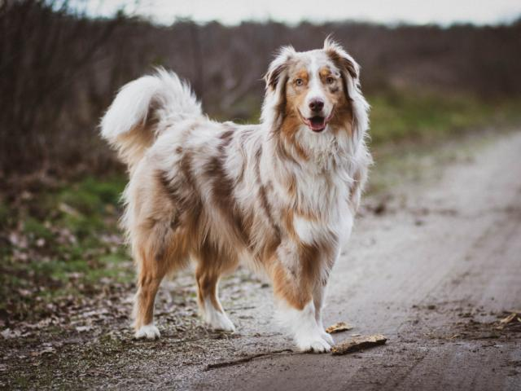
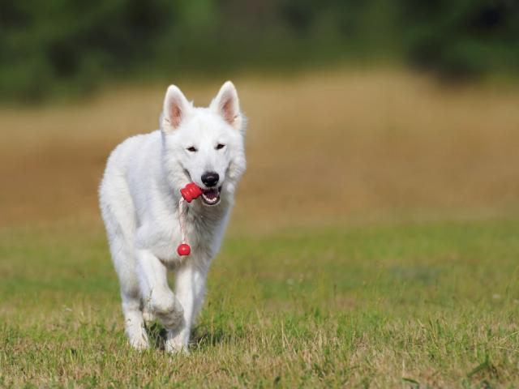
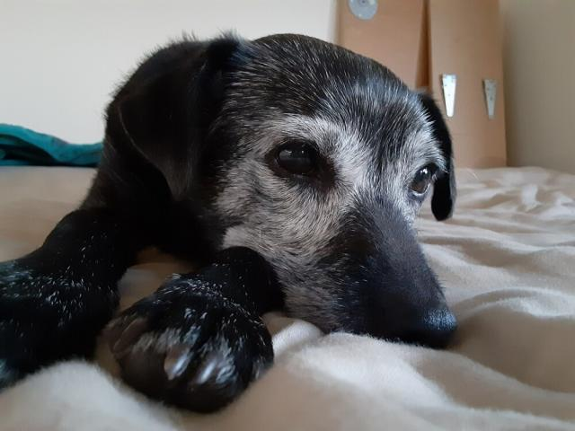

GUARDIAN ONE
A modular design that separates core from shell. At purchase, it's the style piece your friends ask to link; once worn, it's a 24/7 invisible guardian.



MODULAR DESIGN
Sensors, GPS, battery and algorithms all live in that tiny core; the shell does one job — look good. A 5-second click-swap, with core, seasonal and designer-collab lines always dropping.
Multi-sensor fusion of a 6-axis IMU + high-efficiency PPG + temperature, with edge-computing power management: sleep when still, wake on motion — endurance and guardianship at once.
Skin-friendly materials, click-on quick-swap. Three lines: core $12 / seasonal limited $15 / designer collab $19.
Collar and harness forms, fitting 3kg toys to 40kg large breeds. A lightweight cat version is on the roadmap.
WHY IT SELLS
Three people asked for the link on one ten-minute walk. Swappable shells give your dog its own style; collab drops are limited and never restocked.
Live location, geofencing, route playback — free forever, no membership. 90% of escapes happen within 500m of home; one fence is enough.
A heartbeat check-in makes "device online" itself a safety signal. At work, traveling, in boarding — one glance at the app and the world goes quiet.
Subscribe to Guardian+ and its activity, sleep and HRV are continuously recorded — not compared to other dogs, but to its own yesterday.*
IP67 waterproof and dustproof — wear it in rain or bath; 7-day offline storage auto-syncs on return from the wild, never dropping a segment.
OTA updates keep the algorithms evolving with data, steadily lowering false alarms. The collar you buy today understands it better next year.
* Guardian+ provides data-trend nudges, not a medical diagnosis; consult a licensed vet for diagnosis and treatment.
BY THE NUMBERS
All-day online guardianship
Offline local storage
Shell quick-swap time
Individual baseline window
SPECS
| Sensors | 6-axis IMU (accel + gyro) · high-efficiency PPG · auxiliary temperature · multi-constellation GNSS |
| Protection | IP67 waterproof & dustproof (rain- and bath-safe, no prolonged submersion) |
| Endurance | Edge-computing power management: sleep when still / wake for high-rate sampling, multi-day per charge |
| Offline | 7 days of local Flash storage, auto resume-from-breakpoint on reconnect |
| Reliability | Scheduled heartbeat check-in · offline-timeout alert · OTA firmware updates |
| Fit | Collar / harness forms · fits 3–40kg dogs · skin-friendly quick-swap shells |
| Free features | Live location · geofencing · route playback (free for life) |
| Guardian+ features | HRV / temp trend / respiration / activity rhythm · individual baseline · explainable nudges · impact detection · monthly report · cloud vet |
| Data security | Three-tier classification (basic/private/sensitive) · encrypted storage · full user ownership, export/revoke anytime |
| In the box | Guardian core ×1 · core shell ×1 · magnetic charging cable ×1 · 30-day Guardian+ trial |
"You buy it for the looks.— the line that came up most in early-user research
You keep it because you can't do without."